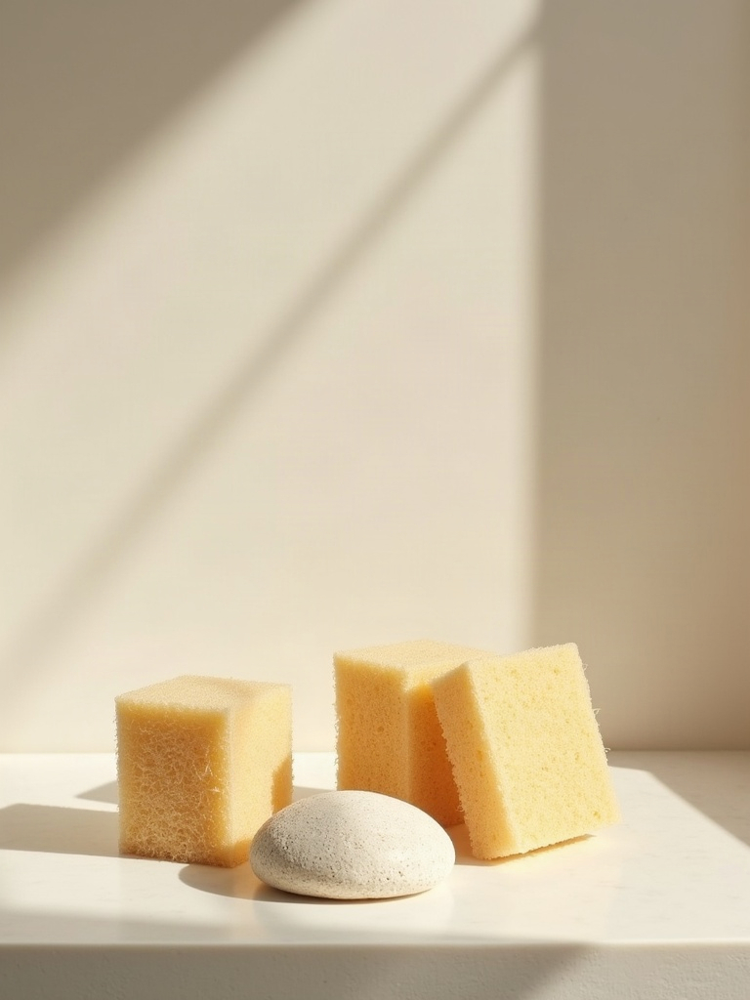

Nearby
Areas of concern
Roughness, enlarged pores, and a surface that no longer reflects light evenly. Skin that looks fine in a mirror and tired in a photograph.
Why it is hard to name
Texture is the concern people struggle to name. There is no single mark to point at. Makeup sits badly, light catches wrong, and the overall impression is dullness rather than any specific flaw.
Because it is vague, it is the concern most often treated with whatever product is nearest, and the most likely to be over-exfoliated in the attempt.
What changes
The cause is identified. Sun damage, acne scarring, natural collagen loss and over-exfoliation all produce texture change and need different responses.
Over-treatment gets ruled out. A meaningful proportion of texture complaints are caused by too much active skincare rather than too little, and the first instruction is often to stop something.
Depth decides the tool. Surface roughness and true scarring live at different levels.
An evaluation determines whether a treatment is appropriate at all. It is not a safety or outcome guarantee.

Sometimes the first instruction is to stop somethingHow it is approached
Depending on the cause and depth, the plan may involve resurfacing with Halo laser, collagen-stimulating treatment such as microneedling or Scarlet RF, a medical facial, or a period of simplifying the routine before anything is done at all. That last one is a real recommendation here, not a stalling tactic.
Who this is for
Adults roughly 35-65 across Marin County who want visible improvement in skin, body contour or pelvic-floor function, and who want a physician evaluating whether a treatment is appropriate for them at all.
The ceiling
No perfect or poreless skin. Pore size is largely structural and is softened rather than removed.
No outcome guarantee, no "typical results" framing.
No before and after photographs, because none is published with a documented patient release yet.
No "zero downtime" claim. Resurfacing has recovery, and the amount is stated before you book.
Nearby
Before you book
Can pores be shrunk?
Not permanently. Pore size is largely inherited and structural. Appearance improves when the skin around them is smoother and better supported, which is a different claim from making them disappear.
Am I exfoliating too much?
Possibly. It is one of the more common findings, and the fix costs nothing.
Is there downtime?
It depends entirely on the treatment. Some have little, some have several days. You are told which before you agree to it, because "zero downtime" is not a claim this practice makes.
What does it cost?
Quote-only pricing. During your consultation, we will build a customized treatment plan with packaged pricing.
Cost
Quote-only
Start with the evaluation
No price list is published here because a real figure depends on what the evaluation finds.